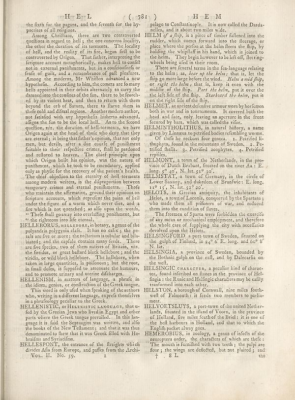

Scan ID britannica:309f765b1ecc83e0a7f7762e44b4a927a7555443:train:1017
Image SHA-256 5395deb0e1413694dd6a4e16890741c049681f5838d6fc92ef14a3019a1c87a4
Status: ok. Running header: H E L ( 781 ) (catchword). Removed page furniture: Page-header: H E L, Page-header: ( 781 ).
PDF · raw Parse reply · LaTeX
Entries: E0074 HELLEBORUS, HELLEBORE HELLENISM HELLENISTIC HELLESPONT HELMET HELMINTHOLITHUS HELMONT HELMSTAT HELOTS HELSINGIA HELSINGIC CHARACTER HELSTON HELVOETSLUYS HEMEROBIUS

| # | Class | Box | Parse 3.5 | Used text | Source |
|---|---|---|---|---|---|
| 2 | Section-header | [0.6436, 0.032, 0.7549, 0.0492] | HEM | HEM | super_vl |
| 3 | Text | [0.0791, 0.0539, 0.4756, 0.0813] | the fixth for the pigans, and the feventh for the hy- pocrites of all religions. | the sixth for the pagans, and the seventh for the hy- pocrites of all religions. | super_vl |
| 4 | Text | [0.0762, 0.082, 0.4775, 0.5563] | Among Christians, there are two controverted quindices in regard to hell; is the one orchestra locality: the other the duration of its moments. The healthy of hell, and the reality of its fire, began frit to be controverted by Origen. That father, interpreted the freture account metaphorically, makes hell souffl not in external punilments, but in a confouficifa or fresh of guits, and a remainbame of poll pleasure. Among the modern, Mr YMillion advances a new hypothesis... According to him, the comets are farany hellis appointed in their orbits alternately to carry the channel into the cosmos o | Among Christians, there are two controverted questions in regard to hell; the one concerns locality, the other the duration of its torments. The locality of hell, and the reality of its fire, began first to be controverted by Origen. That father, interpreting the scripture account metaphorically, makes hell to consist not in external punishments, but in a consciousness or sense of guilt, and a remembrance of past pleasures. Among the moderns, Mr Whiston advanced a new hypothesis. According to him, the comets are so many hells appointed in their orbits alternately to carry the damned into the c | super_vl |
| 5 | Text | [0.0615, 0.5555, 0.4766, 0.6922] | HELLEBORUS, HELLEBORR, in botany, a genus of the polyandria polygynia clafs. I has an cally, the pe- rais are five or more; the reclaim is tubular and blue biarded; and the capital contains many feeds. There are five species, two of them native of Britain, viz. the females, or great balham black hellebore; and the visida, or wild black hellebore. The hellebors, when taken in large quantities, is polinous; but the root, in final dates, is fuppeded to attenuate the humours, and to promote urinary and uterine discharge. | HELLEBORUS, HELLEBORE, in botany, a genus of the polyandria polygynia class. It has no calix; the petals are five or more; the nectarium is tubular and bilabiated; and the capsule contains many feeds. There are five species, two of them natives of Britain, viz. the foetidus, or great bastard black hellebore; and the viridis, or wild black hellebore. The hellebore, when taken in large quantities, is poisonous; but the root, in small doses, is supposed to attenuate the humours, and to promote urinary and uterine discharges. | super_vl |
| 6 | Text | [0.0625, 0.693, 0.4746, 0.7211] | HELLENISM, in matters of language, a phrae in the idem, going, or collection of the Greek tongue. | HELLENISM, in matters of language, a phrase in the idiom, genius, or construction of the Greek tongue. | super_vl |
| 7 | Text | [0.0635, 0.7219, 0.4736, 0.7602] | This words is only of what breaking of the authors who, writing in a different language, express themselves in a philosophy peculiar to the Greek | This word is only used when speaking of the authors who, writing in a different language, express themselves in a phraseology peculiar to the Greek. | super_vl |
| 8 | Text | [0.0645, 0.7609, 0.4785, 0.8547] | HELLENISTIC, OF HARRISTIC LANDOABT, that ufed by the Greenian Jews who lived in Egypt and other parts where the Greek tango prevailed. In this lan- gauge it is fail the Septragint was written, and all the books of the New Telmaners; and that it was thus denominated to these that it was Greek filled with He- brafinn and Syriacifine. | HELLENISTIC, or HELENISTIC LANGUAGE, that used by the Grecian Jews who lived in Egypt and other parts where the Greek tongue prevailed. In this language it is said the Septuagint was written, and also the books of the New Testament; and that it was thus denominated to fhew that it was Greek filled with Hebraifms and Syriacifms. | super_vl |
| 9 | Text | [0.0654, 0.8555, 0.4727, 0.8969] | HELLESPONTS, the entrance of the flereights which divides Afa from Europe, and paths from the Archi- Vol. II. No. 59. | HELLESPONT, the entrance of the streights which divides Afia from Europe, and paffes from the Archi- | super_vl |
| 10 | Text | [0.5039, 0.0531, 0.8994, 0.0828] | pelago to Confantainople. It is now called the Darda- nelles, and is about two miles wide. | pelago to Constantinople. It is now called the Dardanelles, and is about two miles wide. | super_vl |
| 11 | Text | [0.5029, 0.0836, 0.8984, 0.1641] | HELM _g? a flip_, is a piece of timber fallenred into the reader, which comes forward into the literary, or place where the prefix at the helm flere the flag, by holding the whiplaff in his hand, which is joined to the helm. They begin however to be left off, fleeting- which being died in their room. | HELM of a ship, is a piece of timber fastened into the rudder, which comes forward into the fleerage, or place where the person at the helm steers the ship, by holding the whipstaff in his hand, which is joined to the helm. They begin however to be left off, fleering-wheels being used in their room. | super_vl |
| 12 | Text | [0.502, 0.1648, 0.8975, 0.2594] | There are several terms in the tea-language relating to the helm; as, _hear up the helm;_ that is, let the flip my or most large before the wind. _Helm amid fribp_ or _right the helm;_ that is, keep it even with the middle of the hip. _Part, the helm_, put it over the the of field of the hip. _Starkbard the helm_, put it on the right side of the flip. | There are several terms in the sea-language relating to the helm; as, bear up the helm; that is, let the ship go more large before the wind. Helm amid ship, or right the helm; that is, keep it even with the middle of the ship. Port the helm, put it over the left side of the ship. Starboard the helm, put it on the right side of the ship. | super_vl |
| 13 | Text | [0.501, 0.2586, 0.8965, 0.3109] | HELMET, an ancient dective armour worn by horlemen both in war and in tournaments. It covered both the head and face, you leaving an anymore to the front fetured by bars, which was called the vitor. | HELMET, an ancient defensive armour worn by horsemen both in war and in tournaments. It covered both the head and face, only leaving an aperture in the front secured by bars, which was called the visor. | super_vl |
| 14 | Text | [0.5, 0.3117, 0.8955, 0.3922] | HELMINTHOLTHUIS, in natural history a name given by Lumana un pretrified bodies of rembling worms. Of the lie no reckons four genera. 1. Petrified li- thehyts, found in the mountains of Sweden. 2. Petirified shells. 3. Petrified zophytes. 4. Petrified reptiles. | HELMINTHOLITHUS, in natural history, a name given by Linnaeus to petrified bodies resembling worms. Of these he reckons four genera. 1. Petrified lithophyta, found in the mountains of Sweden. 2. Petrified shells. 3. Petrified zoophytes. 4. Petrified reptiles. | super_vl |
| 15 | Text | [0.499, 0.393, 0.8945, 0.4336] | HELMONT, a town of the Netherlands, in the province of Dutch Paraban, situated on the river Aa :E. long. 5" 6/5, N. lat. 51" 30". | HELMONT, a town of the Netherlands, in the province of Dutch Brabant, situated on the river Aa : E. long. 5° 40', N. lat. 51° 30'. | super_vl |
| 16 | Text | [0.498, 0.4328, 0.8936, 0.4742] | HELMSSTAT, a town of Germany, in the circle of Lower Saxony, and dukedom of Brunfwie :E. long. 11" 15, N. lat. 22" 22. | HELMSTAT, a town of Germany, in the circle of Lower Saxony, and dukedom of Brunswick: E. long. 11° 15', N. lat. 52° 20'. | super_vl |
| 17 | Text | [0.4971, 0.475, 0.8926, 0.5281] | HELOTS, in Grecian antiquity, the inhabitants of Helon, a town of Lacom, conquer by the Spartan; who made them all prisoners of var, and reduced them into the condition of flares. | HELOTS, in Grecian antiquity, the inhabitants of Helos, a town of Laconia, conquered by the Spartans; who made them all prisoners of war, and reduced them into the condition of slaves. | super_vl |
| 18 | Text | [0.5, 0.5289, 0.8916, 0.582] | The femme of Sparta were forbidden the excerite of any mean on mechanical employment, and therefore the whole care of fupplying the city with necefairs develop upon the filters. | The freemen of Sparta were forbidden the exercise of any mean or mechanical employment, and therefore the whole care of supplying the city with necessaries devolved upon the Helots. | super_vl |
| 19 | Text | [0.4961, 0.5836, 0.8906, 0.6219] | HELSINGTORDIN, a ports town of Sweden, fituated on the gulph of Finland, in 24" 6' E. long. and 60" 8' lat. | HELSINGFORD a port-town of Sweden, situated on the gulph of Finland, in 24° 6' E. long. and 60° 8' N. lat. | super_vl |
| 20 | Text | [0.4951, 0.6234, 0.8926, 0.6633] | HELSINGIA, a province of Sweden, bounded by the Botnhic gulph on the cafl, and by Dalecarila on the well. | HELSINGIA, a province of Sweden, bounded by the Bothnic gulf on the east, and by Dalecarlia on the west. | super_vl |
| 21 | Text | [0.4941, 0.6641, 0.8896, 0.7172] | HELSINGIC CHARACTER, a peculiar kind of character, found inferited on flones in the province of Hel- fingia s the Runic and Hellingic characters may be easily transformed into each other. | HELSINGIC CHARACTER, a peculiar kind of character, found inscribed on stones in the province of Hel- singia : the Runic and Helsingic characters may be easily transformed into each other. | super_vl |
| 22 | Text | [0.4932, 0.7188, 0.8926, 0.7578] | HELLTON, a thorough of Cornwall, nine miles foutwelt of Falmouth; it finds two members to parla- ment. | HELSTON, a borough of Cornwall, nine miles south- west of Falmouth: it sends two members to parlia- ment. | super_vl |
| 23 | Text | [0.4922, 0.7586, 0.9004, 0.8266] | HELNOETSLUTS, a port-town of the united Netherlands, fituated in the illand of Voorn, in the province of Holland, five miles south of the Breli; it is one of the bell chorus in Holland, and that to which the English packet always goes. | HELVOETSLUYS, a port-town of the united Netherlands, situated in the island of Voorn, in the province of Holland, five miles south of the Briel: it is one of the best harbours in Holland, and that to which the English packet always goes. | super_vl |
| 24 | Text | [0.4912, 0.8273, 0.9062, 0.8977] | HEMEROBIUS, in zoology, a genus of deficits of the temperature, the characters of which are thefe. The mouth is furnished with two teeth; the pulpit are four; the wings are dellected, but not planted ; and: | HEMEROBIUS, in zoology, a genus of insects of the neuroptera order, the characters of which are these: The mouth is furnished with two teeth; the palpi are four; the wings are deflected, but not plaited; and | super_vl |
Britannica scans: National Library of Scotland, CC0 1.0. Wikipedia text: Wikipedia contributors, CC BY-SA 4.0, revision links on each page. Generated 2026-10-18T13:26:14+00:00.